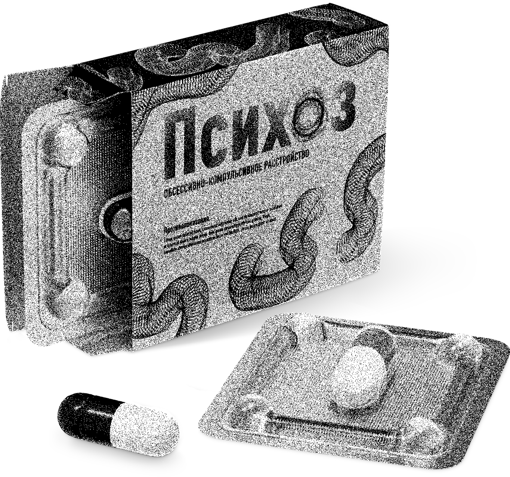

ОКР — Обсессивно-компульсивное расстройство. При ОКР у больного непроизвольно появляются навязчивые, мешающие или пугающие мысли, так называемые обсессии. Он постоянно и безуспешно пытается избавиться от вызванной мыслями тревоги с помощью столь же навязчивых и утомительных действий компульсий.
